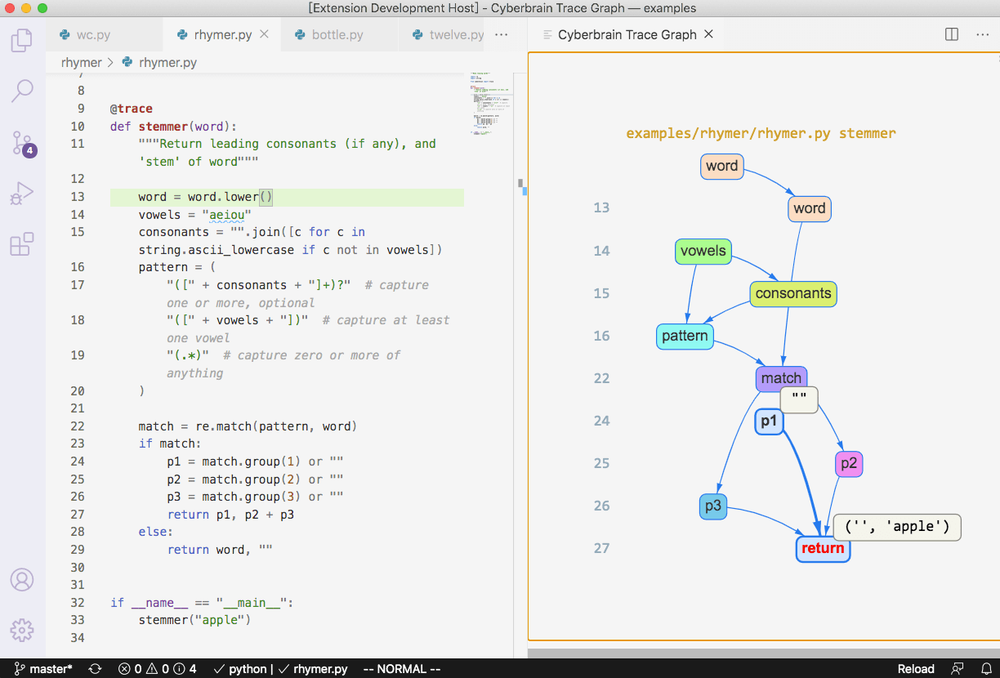

Portfolio
Cyberbrain

- Collaborator of open-source project on GitHub
- Python utility to view trace graph at every step with one execution (no need to debug one step at a time)
- Implemented in Python using bytecode analysis and viewable as a VSCode extension
- Take a look here
Auto Subscription Playlist

- Google Apps Script that takes a list of channels and adds all recently posted videos to a playlist
- Main collaborator of open-source project on GitHub. Resolved 40 issues and contributed to 28 pull requests
- Looking for more colaborators!
- Come see for yourself here
VioLegacy
- Built a website to help NYU juniors connect with alumni to receive referrals for internships
- Created and managed Firebase database and Cloud Functions
- Created test scripts and automated ci/cd pipelines using Node.js and GitHub Actions
- Check it out here
EDM Promotion YouTube Channel

- Started in December 2016
- Find songs and upload videos daily at tiny.cc/musicspies
- Developed After Effects script to expedite video-making process